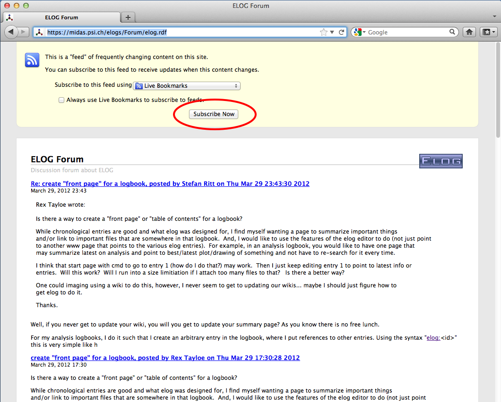
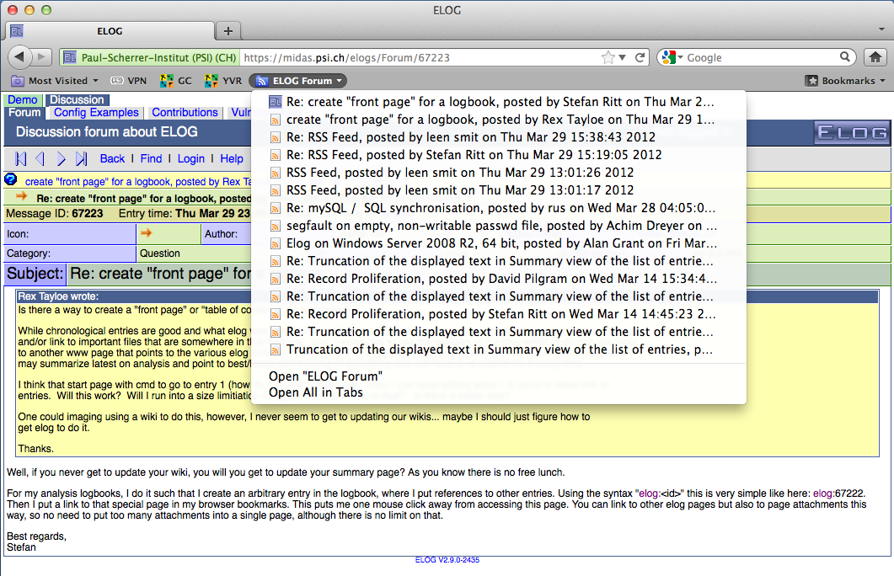

ELOG User's Guide
How to get the most from your ELOG server
A Quick Intro
ELOG is part of a family of applications known as weblogs. Their general purpose is :
- to make it easy for people to put information online in a chronological fashion, in the form of short, time-stamped text messages ("entries") with optional HTML markup for presentation, and optional file attachments (images, archives, etc.)
- to make it easy for other people to access this information through a Web interface, browse entries, search, download files, and optionally add, update, delete or comment on entries.
ELOG is a remarkable implementation of a weblog in at least two respects :
-
its simplicity of use : you don\'t need to be a seasoned server operator and/or an experimented database administrator to run ELOG ; one executable file (under Unix or Windows), a simple configuration text file, and it works. No Web server or relational database required. It is also easy to translate the interface to the appropriate language for your users.
-
its versatility : through its single configuration file, ELOG can be made to display an infinity of variants of the weblog concept. There are options for what to display, how to display it, what commands are available and to whom, access control, etc. Moreover, a single server can host several weblogs, and each weblog can be totally different from the rest.
This is actually a problem when writing a User's Guide, because ELOG servers, and individual weblogs on one server, can vary wildly in appearance and functionality... This guide only attempts to cover the main concepts of importance for ELOG users, describing the default "out-of-the-box" setup and how that behaviour may have been modified by the server administrator.
What Words Mean Here
Just to be clear, some definitions of terms that will be used throughout the guide :
- ELOG server : the machine on which the ELOG server is run. Its operating system (Windows/Unix/Linux) and status (server/desktop) are not important, and of course it will probably do many other things besides.
- ELOG administrator : the person who has the authority to modify the ELOG configuration file on the server. May be an actual system administrator, a normal user of a server, or just the owner of a Windows PC.
- logbook : a weblog made available by the ELOG server. There may be many distinct such logbooks on one server.
- entry : the individual piece of information in a logbook. Can be as basic as a text message with a time-stamp, or carry much more information : attributes (see below), HTML markup, links, attached files...
Accessing an ELOG server and its logbook(s)
To access a logbook, point your Web browser at the appropriate URL. The
default for a local Elog is http://localhost:8080/logbookname.
Logbook files are stored in directory logbookname which is a
sub-directory of the logbook root directory, defined by the
administrator. See the administrator guide on how to create a new
logbook.
If several logbooks are defined on the server, the entry page may be a list of all logbooks, with their descriptions, number of entries, and links to enter the logbook you want to use.
Alternatively, you may be taken directly to a specific logbook. By default you will see a list of entries, but the administrator may have defined a different "default view" for the logbook, like the list of the day\'s entries, or directly display the last entry, etc. (depending on what is most convenient for that logbook\'s purpose).
Each entry in a logbook is identified by an unique ID, which is last part of the URL when that message is displayed. This ID might be used to create a bookmark in a browser pointing directly to a specific entry.
There are four ways through which access to a logbook may be controlled: it may be open for all to read ; it may require a common "read" password for all users ; it may require each user to have an individual user account (login name) and password ; finally, access may be granted or not depending on the address of the workstation you are using.
Viewing information in ELOG
There are two main viewing modes in a logbook :
- the "entry" view : this is when only one entry is displayed on screen (like the latest entry when you first enter a logbook, or if you click on one in a list). Here are the various parts of the display :
-
if there are several logbooks on the ELOG server you will see a row of "tabs" at the top with the names of all the logbooks. These are link that allow to switch quickly between logbooks (this may be disabled).
-
below is a title bar with the name of the current logbook at the left, and the ELOG logo at the right. If you are logged in, there will be a "
Logged in as <username>" reminder in between. -
next is the "menu bar" : on the left is a series of links or buttons for ELOG commands available to you. These are explored in the sections below (Note: different users may see different menus). On the right is a "VCR-like" set of buttons for browsing, also explained later (this may be disabled).
-
after these comes the actual entry information. It always starts with the entry time-stamp, and may be followed by up to twenty "attributes". These are like fields in a database and have been defined specifically for the current logbook. Each attribute has a checkbox besides it, explained below (this may be disabled).
-
the full-width box below holds the textual content (message) of the entry. This can be plain-text or HTML code. Note that for some special applications (say, a photo album or an event log) the attributes and/or the attached files may be enough information, so this field may not always be present.
-
last and optionally, one or more attached files (that were uploaded to the server when the entry was created) are offered as clickable links for download or viewing, along with the file name and size. If these are images they may be displayed directly on the page.
At the bottom of every page is a common "footer" for the logbook. By default this is just a link to the ELOG home page in Switzerland, but may be customized locally (typically to provide a navigation bar and links for integration with other Web sites). - the "search result" views : these are basically lists of entries, resulting either from a "Search" command or from shortcuts such as "Last X days" and "Last X entries" commands (more on this below). This mode has many options, including : - a "summary" view : one entry per row in a table. Some attributes may not be displayed. If the entry text is displayed (or its first few lines), it goes into the rightmost column. Attachments are not displayed.
-
a "classical weblog" view : entries appear beneath one another, with attributes on one line and the text (and attachments, if present) below. Images may be displayed or just linked to.
-
entries may appear most recent first, or in reverse.
-
menus on list views are different from the entry view menu. By default they only have two or three commands, but they may have been customized by the administrator to add more.
All these lists have a number to the left of each listed entry, that is a link to the corresponding entry view.
Browsing around and finding things
There are several interesting ways to peruse the information in a logbook :
- weblogs" are often used for applications where chronology (time) is relevant, so a very common approach is to see "what happened last". In ELOG there are two commands for this. They are actually shortcuts for searches, to display the last day\'s (24 hrs) entries, or the last 10 entries (regardless of age). Note that the menus on the "search result" views of these commands are a bit special : they have the same command that created them, but with the search "interval" doubled. From the "last day" list you can get the "last 2 days" list, from that one the "last 4 days", etc., and similarly for "last 10", "last 20", etc., making it easy to quickly go back in time.
- another useful method, very specific to ELOG, is "filtered browsing" - again, shortcuts for specific searches. On the entry view, the "VCR" buttons normally let you see the previous, next, first or last entry in the logbook. However, if on the current entry you check one (or more) of the checkboxes in front of the attributes, only entries having the same value for the checked attribute(s) will be displayed by the browse buttons. Thus you can quickly flip through all the entries you submitted yourself, or of a certain type/category, depending on what attributes have been defined.
- for custom searches there is the query form given by the "Find" command. This lets you look for entries between two dates, with particular values for any attribute, or containing specific text. If you fill in several fields, only entries that meet ALL criteria will be selected. Possible options include sort order and summary view for results, printer-friendly formatting, displaying attachments or not, and searching through all logbooks on the ELOG server (if applicable).
Adding stuff to a logbook
If you have "write access" to a logbook (by one of the same four methods as for read access), then you may use the "New", "Edit", "Reply" and "Delete" commands.
For the quality of the information committed to the logbook, you need understand and use these as well as possible. Here are some of the important features for each commmand :
- New :
- you will not be able to save your entry if all attributes marked with a red star (*) are not filled in.
- some attributes may be pre-filled from system variables (like your user name). Pre-filled attributes may be still editable or read-only (like the entry creation date).
- attributes may be text fields (limited to 100 characters), list-boxes (max. 100 values), or check-boxes. There is also a special type of attribute where several values are listed on a line with check-boxes, and you can check as many values as needed.
- a nice touch : URLs in attributes (http://..., ftp://..., mailto:...) are automatically converted to links.
- in addition to the above URLs, one can enter a tag elog:\<id> which references another logbook entry. The tag elog:\<logbook>/\<id> references a message in another logbook on the same server. The tag elog:\<id>/\<n> references attachment number n in a logbook entry. To reference an attachment in the current message, one uses elog:/\<n>. An anchor inside an entry can be referenced with elog:\<id>#\<anchor>.
- the Text multi-line field, if present, may be pre-filled with a template if entries need to have a common, consistent format across the logbook (especially for HTML). There may also be a comment inserted before it to explain local rules and conventions, upload rules, etc.
- check the "Submit as HTML" box if the entry contains HTML markup.
- a logbook may be configured to send a notification e-mail to various recipients each time an entry is submitted. This may be the default behaviour, and you should check "Suppress notification"" if it is not wanted. Or it may be checked by default, and you need to explicitely uncheck it to send the mail. Then again, you may not have a choice... (note that notifiation recipients may or may not be disclosed).
- if the logbook allows attachments, there will be a number of fields with "Browse" buttons at the bottom of the form. Use these to pick one or more files on your local computer, they will be uploaded to the ELOG server as you submit the form. IMPORTANT : there is an upper limit on the size of individual attached files. By default it is about 1 MB but can be changed by the administrator.
- Edit :
- normally the Edit form will have all the values of the existing entry in its fields for modification. However, sometimes you may see fields that have been blanked if this makes sense for a particular logbook application (e.g. a "Last modified by" field).
- the "Submit as new entry" checkbox only appears on Edit forms. If it is unchecked, the modified entry keeps its original creation time-stamp. If it is checked, the modified entry becomes the latest in the logbook, as if it had just been created. Again, it is possible that this is checked by default, or disabled altogether on some logbooks.
- managing attachments through this form is easy. If all you want to
change is the attributes or text, don\'t touch the fields at the
bottom and the original attachments will be preserved. If you want
to add an additional attachment, use an empty field. If you want to
update an existing file, use the "Browse" button below that
file\'s name to specify the new one. Lastly, if you want to delete
an attachment without upoading a new one in its place, you must type
the magic word "
<delete>" in the field below its name. - Reply :
- this command creates a new entry, but with the current entry\'s text "quoted" (with \'>\') in the compose form, much like when replying to e-mail.
- the new entry has a special "In reply to" attribute with a link to the original entry ; the latter also acquires a "Reply" attribute with a link to the new entry. Unfortunately these links cannot be trusted in the present ELOG storage system, and the whole scheme gets somewhat confusing when there are several replies.
- Delete :
- nothing much to say about this one, except that there is no "Recycle bin" or whatever : once you have confirmed the deletion of an entry, it\'s gone for good, so be careful ! (same holds for the replacement or deletion of an attached file).
Misc. tips & tricks, things to be aware of...
-
you can link directly to a specific entry by its URL, using the message ID (from another entry or an external Web page). It is also possible to link to a search result this way: use the "Search" form to compose a query that will result in exactly what you want (either a single entry or a list of entries). Copy the URL for that result page from your browser, and use that as the target for your link.
-
right now you cannot search entries for attachments by their file name.
-
right now attributes that consist of just a checkbox ("boolean") can only be searched by "checked" state in the "Search" form. However, if you start from an entry where that attribute is unchecked, you can use "filtered browsing" to flip through all other entries where it is also unchecked.
-
as mentioned above, the "Reply" command only provides a basic comment/chat facility - a full-blown discussion board is not ELOG's purpose. If a logbook has a very specific purpose and format (picture gallery, event log, file library etc.) it might be a good idea to disable that command there and move all chat/comments/discussions to a separate, dedicated logbook to avoid "visual pollution".
-
it is important to understand that currently the ELOG server application is "single-process" and "non-streaming". In normal terms this means that :
-
only one request is processed at any one time by the server.
-
uploading or downloading an attachement file is a single request, and causes the entire file to be loaded in server memory while the request is being processed.
This is not normally a problem for the sort of short, text-mode entries ELOG is designed to support. However, if a user starts to upload or download a large attachment file (or image) over a slow link, all other users on that ELOG server will have to wait for that transfert to finish before they can access any logbook on that server. This is why there is a low limit on the size of attachments, and why ELOG should not be used to distribute large files under intensive multi-user conditions.
-
It is possible to use bookmarks to pre-populate various attributes when submitting an ELOG entry. This can be useful if the same person often creates similar entries from the same PC. For example, with a bookmark of the form:
http://your.host/your_logbook/?cmd=New&pauthor=joe&ptype=Info
...a new entry is created, with the "author" field pre-populated with "joe" and the "Info" value preselected for the "type" field. The same is possible for any attribute defined in the logbook (note the leading "p"). Thus you can define a set of bookmarks for various types of logbook entries.
elog command line client
In addition to submission of logbook entries through the Web interface, the standalone "client" program elog can be used.
The parameters are:
elog <parameters>
-h <hostname> Hostname where elogd is running
[-p port] Port where elogd is running
[-d subdir] URL Directoy where elogd is running
-l logbook Name of logbook
-s Use SSL for communication
[-v] For verbose output
[-w password] Write password defined on server
[-u username password] User name and password
[-f <attachment>] Up to 50 attachments
-a <attribute>=<value> Up to 50 attributes
[-r <id>] Reply to existing message
[-q] Quote original text on reply
[-e <id>] Edit existing message
[-x] Suppress email notification
[-n 0|1|2] Encoding: 0:ELcode,1:plain,2:HTML
-m <textfile>] | <text>
Arguments with blanks must be enclosed in quotes. The elog message can either be submitted on the command line, piped in like
cat text | elog -h ... -l ... -a ...
or in a file with the -m flag. Multiple attributes and attachments can
be supplied. If attributes with multiple possible values are defined
in a logbook (via the "MOptions" keyword), they can be separated
with a "|", like -a "<attribute>=<value1> | <value2>". The
message text can be supplied directly at the command line or submitted
from a file with the -m flag.
The elog program makes it possible to submit logbook entries
automatically by the system or from scripts. In some shift logbooks
this feature is used to enter alarm messages automatically into the
logbook.
RSS Feed
RSS (RDF Site Summrary or Really Simple Syntication) is a web feed format to publish frequently new or updated ELOG entries. This is a bit like the email notifications present in ELOG, but the RSS system does not go through an email reader, but through a dedicated RSS reader. This helps to seperate ELOG updates form other email or spam. An RSS "channel" can be subscribed to, so one gets notified whenever a new or updated entry exists. One can either use a dedicated RSS reader or aggregator, or use the RSS functionality of a web browser, such as Firefox or Google Reader.
To obtain the RSS feed, one simply has to request the file
elog.rdf from a logbook. For the ELOG forum, one can enter the URL
https://elog.psi.ch/elogs/Forum/elog.rdf
The browser then offers the possiblity to subscribe to that logbook:

In case of "Live Bookmarks" in Firefox, new logbook entries automatically appear in the bookmark list:

Standalone RSS reader can also notify the user of new entries with dialog boxes and sounds. For a list of availabel RSS aggregators, see here.